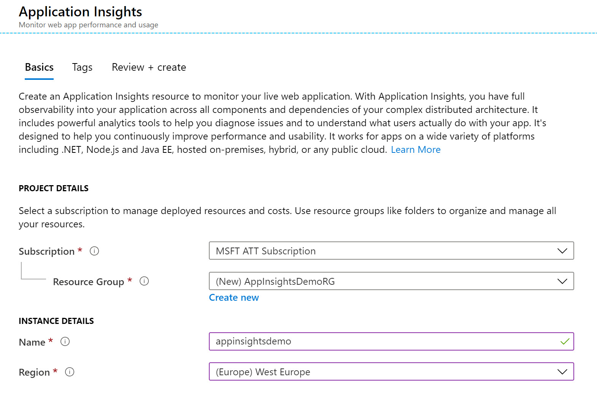
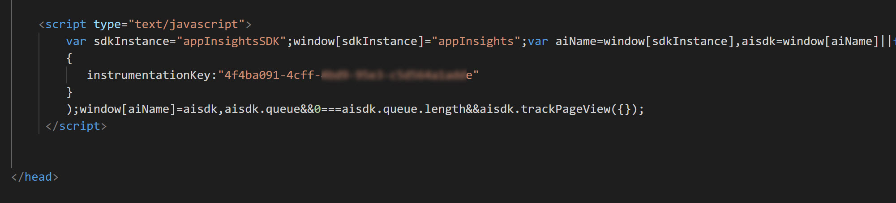
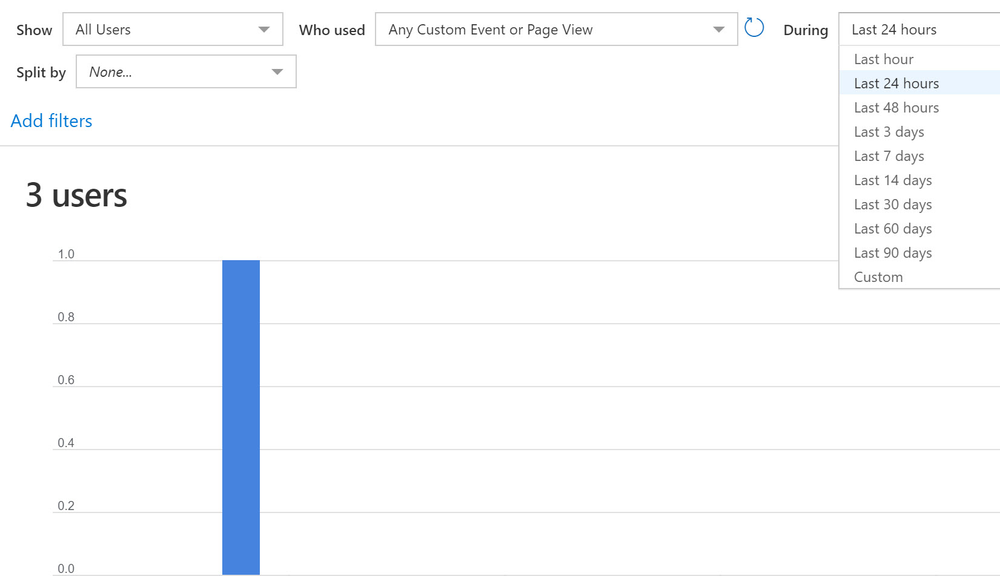
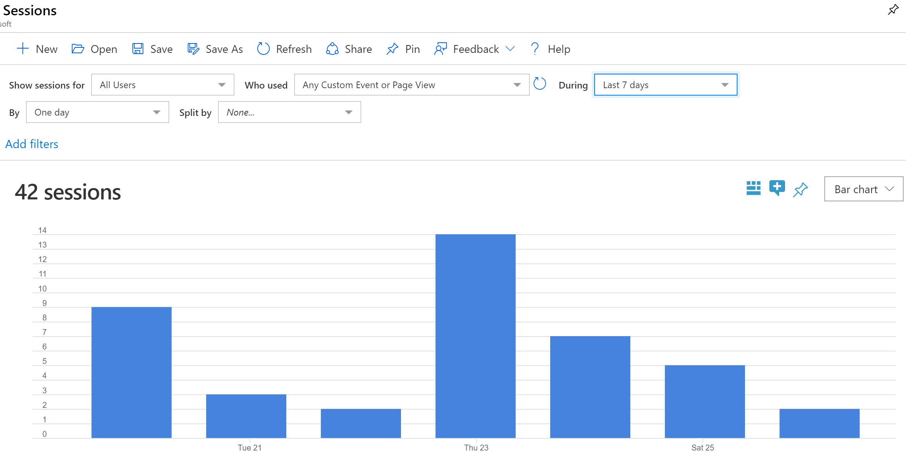
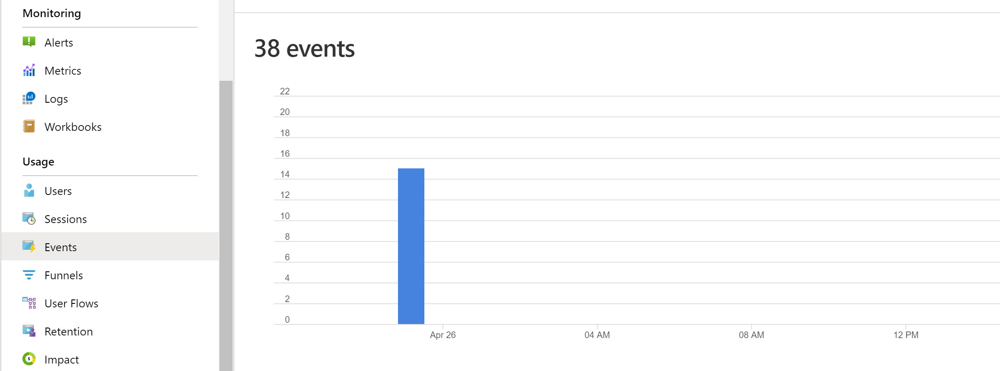
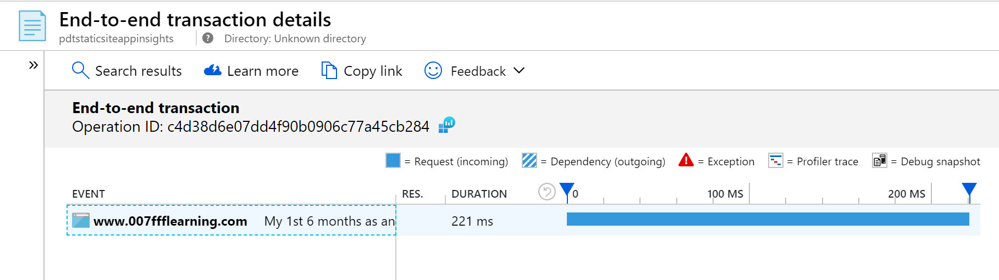
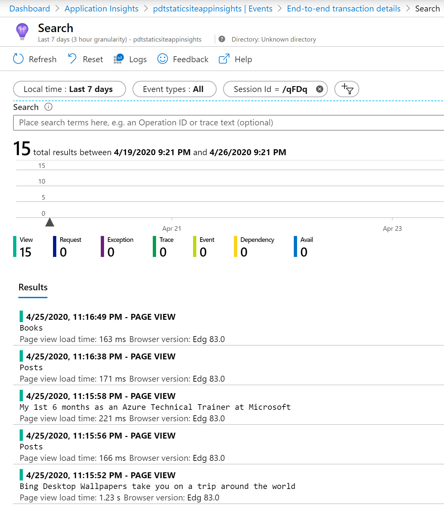

Welcome back!
About a month ago, I decided to move my former 007FFFLearning website from Wix.com to something “easier” to use for blog writing. While Wix is an excellent platform, offering an easy way to build a graphical website, besides a ton of plug-ins, it also comes with a cost. And since I didn’t have a need for a lot of the built-in features I was using out of my own business before I joined Microsoft, I wanted to try something new.
That “something new” eventually was Hugo, an Open Source web platform, supporting HTML and MarkDown. After a quick test, I found it also worked fine on Azure Storage Static Site, which to me was the motivation to give it a try.
(FYI, have a look here about how to get your own Hugo website started, and hosting it on Azure including Azure CDN or Azure Front Door services…)
Having a platform for blog posts is one thing, getting your hands on statistics around popular posts and overall web site visits is maybe even more crucial if you want to take blogging serious. Since the core backend of my Hugo site is running on Azure, I wanted to integrate Azure Application Insights, since I knew how powerful it was for monitoring web application workloads, running in Azure or elsewhere.
1. Deploying Application Insights
- The first step is straight forward if you already have Azure experience. From the Azure Portal, create a new resource, and search for “Application Insights”.

-
Complete the necessary parameters to get this resource created:
- Subscription
- Resource Group
- Name
- Azure Region

-
Wait for the resource to get created. Once created, open the Application Insight blade:

2. Integrating Instrumentation Key script into the Hugo website
- From the top right corner, it will show you the “Instrumentation Key”, which is the unique identifier for this Application Insights instance. This must be linked to each and every web page we publish on our website, to transfer telemetry information back to the App Insights back-end. The way to do this is adding a little JavaScript script into the header of the index.html, and is described more in detail at the following Azure docs link:
While this sounds like a tremendous job, Hugo actually makes this rather easy. Although you create each standalone post (or other item) as a single MarkDown file, during the “rendering process”, Hugo compiles this into a static index.html for each post (or other item). This is based on gluing different snippets of the layout together.
In my Hugo theme, I found out that using the “head.html” file in the root of my layout folder “(<Hugo_source_folder\themes<themename>\layouts\partials)” would to the trick.

- Open this file in a text editor like VS Code, and browse all the way to the end of the section. Paste in the following lines (as shown on the Azure Docs page), replacing the INSTRUMENTATION_KEY with the one you find in the Application Insights Overview section:
<script type="text/javascript">
var sdkInstance="appInsightsSDK";window[sdkInstance]="appInsights";var aiName=window[sdkInstance],aisdk=window[aiName]||function(e){function n(e){t[e]=function(){var n=arguments;t.queue.push(function(){t[e].apply(t,n)})}}var t={config:e};t.initialize=!0;var i=document,a=window;setTimeout(function(){var n=i.createElement("script");n.src=e.url||"https://az416426.vo.msecnd.net/scripts/b/ai.2.min.js",i.getElementsByTagName("script")[0].parentNode.appendChild(n)});try{t.cookie=i.cookie}catch(e){}t.queue=[],t.version=2;for(var r=["Event","PageView","Exception","Trace","DependencyData","Metric","PageViewPerformance"];r.length;)n("track"+r.pop());n("startTrackPage"),n("stopTrackPage");var s="Track"+r[0];if(n("start"+s),n("stop"+s),n("setAuthenticatedUserContext"),n("clearAuthenticatedUserContext"),n("flush"),!(!0===e.disableExceptionTracking||e.extensionConfig&&e.extensionConfig.ApplicationInsightsAnalytics&&!0===e.extensionConfig.ApplicationInsightsAnalytics.disableExceptionTracking)){n("_"+(r="onerror"));var o=a[r];a[r]=function(e,n,i,a,s){var c=o&&o(e,n,i,a,s);return!0!==c&&t["_"+r]({message:e,url:n,lineNumber:i,columnNumber:a,error:s}),c},e.autoExceptionInstrumented=!0}return t}(
{
instrumentationKey:"INSTRUMENTATION_KEY"
}
);window[aiName]=aisdk,aisdk.queue&&0===aisdk.queue.length&&aisdk.trackPageView({});
</script>
- The code within the head.html file should look similar to this now:

3. Render/Compile your Hugo Website
-
From the root folder of the Hugo Website, run hugo to recompile all your content pages (posts and other) into their final index.html files.
-
Publish the source code of the website to your Azure Static Site
-
Browse to a few posts on your website, to generate traffic; we will validate this in the next step from within Application Insights
4. Get statistics from within Application Insights
- Back in Application Insights in the Azure Portal, browse to Usage

- and select Users; this will show you a diagram of the user visits for the last 24 hours. You can change the time window if needed by selecting other filters.

- For example, changing the time window to 7 days, changes the view to this in my example:

- If you click the “View More Insights” button, you can see additional statistical details about the site visitors, this time nicely structured by country:

- Scrolling more down shows yet another summary view, summarized by (active) session:

- Click on any of the active session details; this opens a sidebar view, exposing more granular information about that session:

- Back from the Usage menu of Application Insights, select Events

- This will again show you detailed views on the actual past events for the last 24 hours, 7 days or any other time window you select. You can again click the “View More Insights” button, to find specific event statistics, which refer to page views of each and every blog post on our website.

- Click on any of the event statistics items; this redirects you to another section in Application Insights, the “End-to-end transaction details”

- From this view, select All available telemetry information for this session, under the Related items section:

- Which in turn exposes additional details about each and every item viewed during that specific session

4. Summary
Application Insights is a powerful (web) application monitoring and troubleshooting tool within Azure, coming with impressive dashboards. This allows for very detailed analytics of web sessions, users, telemetry information and more. While App Insights has a lot more features than what I covered here, it helps in getting a clear view on your Hugo website view statistics.
And that was the core objective of this post.
I’m learning more about Hugo in combination with Azure services, and love it more each and every day. Expect more posts around these subjects in the near future.
For now, stay safe and healthy! as always, reach out to share your feedback or ask questions.
/Peter